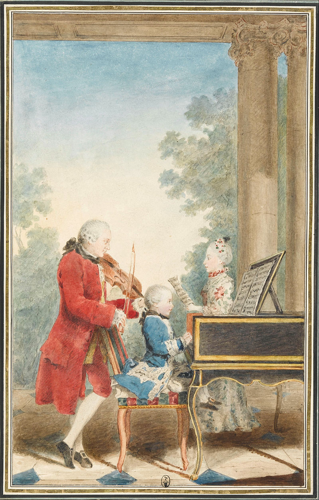

Life
Early life
Wolfgang Amadeus Mozart was born on 27 January 1756 to
Leopold Mozart (1719–1787) and Anna Maria, née Pertl (1720–1778), at 9
Getreidegasse in Salzburg.When Nannerl was 7, she began keyboard lessons
with her father, while her 3-year-old brother looked on. Years later,
after her brother's death, she reminisced:He often spent much time at the
clavier, picking out thirds, which he was ever striking, and his pleasure
showed that it sounded good.... In the fourth year of his age his father,
for a game as it were, began to teach him a few minuets and pieces at the
clavier.... He could play it faultlessly and with the greatest delicacy, and
keeping exactly in time.... At the age of five, he was already composing
little pieces, which he played to his father who wrote them down.[10]
Journey to Paris
In August 1777, Mozart resigned his position at Salzburg[30] and on 23 September ventured out once more in search of employment, with visits to Augsburg, Mannheim, Paris, and Munich.[31]
Mozart became acquainted with members of the famous orchestra in
Mannheim, the best in Europe at the time. He also fell in love
with Aloysia Weber, one of four daughters of a musical family.
There were prospects of employment in Mannheim, but they came to
nothing,[32] and Mozart left for Paris on 14 March 1778[33] to
continue his search. One of his letters from Paris hints at a
possible post as an organist at Versailles
but Mozart was not interested in such an appointment.
Travel
During Mozart's youth, his family made several European journeys in which he
and Nannerl performed as child prodigies. 
These began with an exhibition in 1762
at the court of Prince-elector Maximilian III of Bavaria in Munich, and at the
Imperial Courts in Vienna and Prague.A long concert tour followed, spanning three
and a half years, taking the family to the courts of Munich, Mannheim, Paris, London,[15]
The Hague, again to Paris, and back home via Zurich, Donaueschingen, and Munich.
[citation needed]